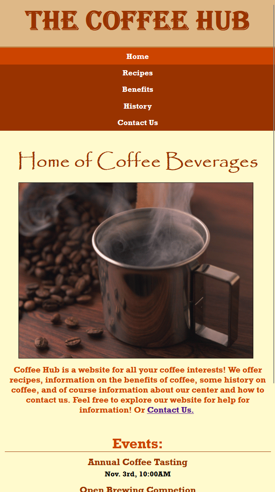

Project Specifications:
- The sites contains 6 web pages: index, health, history, mental, contact, recipes. The PDF design document is available here.
- Each site has a favicon:
- Each webpage has a header as follows:
- Each webpage has a navigation bar as follows:
- Each site has distinct differences in layout for small vs large screens (css located in separate css files): 
- Site contains images as shown above
- Site passes Nu Validator and Wave Web Accessibility Evaluator
- Site uses several different font faces as shown above
- Site uses form and form validation:
- Site links to several external sources, one shown here:
- Website is available here